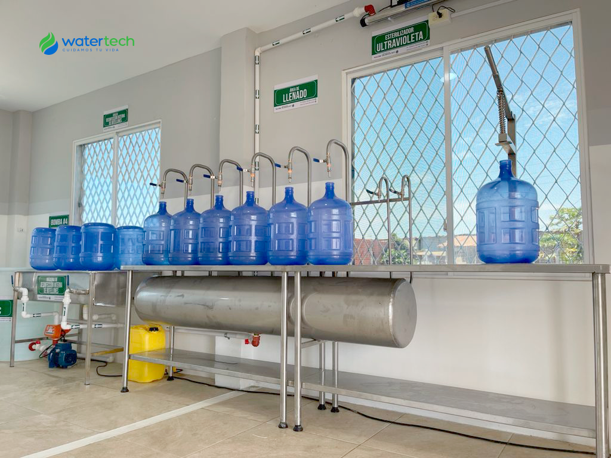
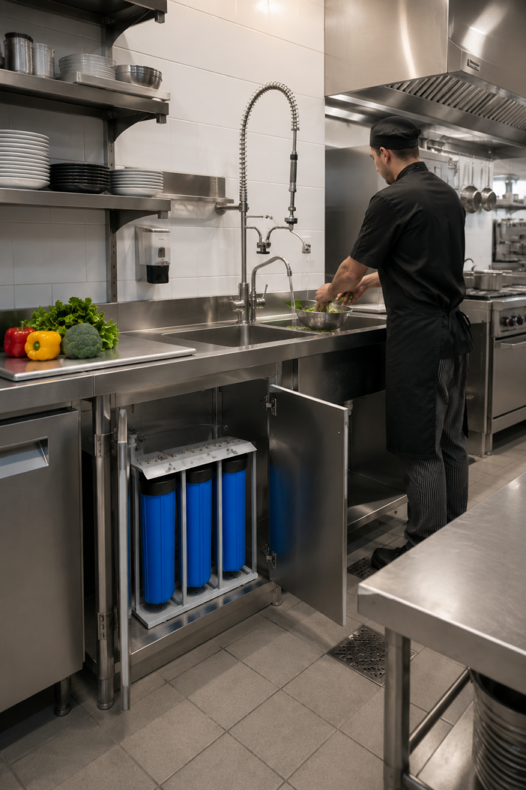
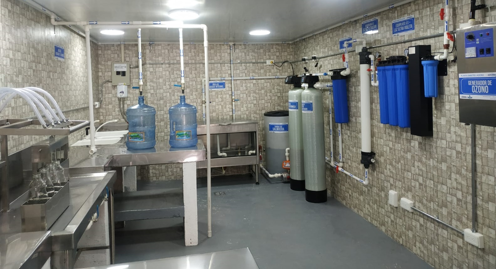
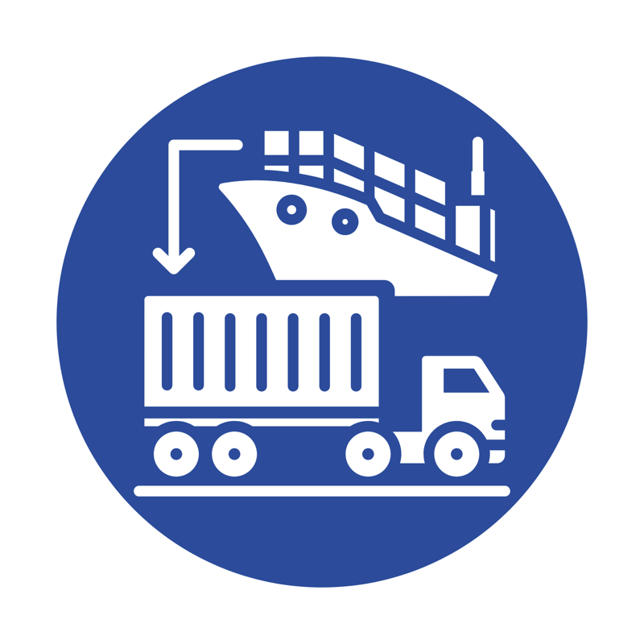
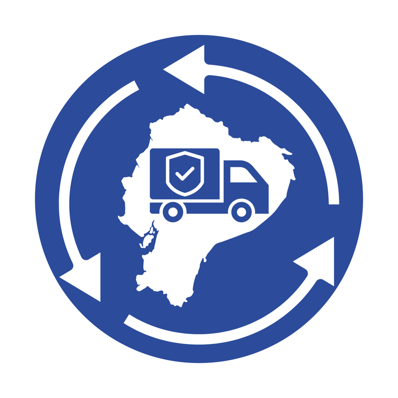

Cuidamos tu vida con ingeniería de agua
Ingeniería de agua para industria y hogar.
Sistemas, equipos y soporte técnico para tratamiento de agua con enfoque industrial y soluciones confiables para el hogar.
-
Industrial plantas, procesos y continuidad operativa
-
Residencial purificación confiable para el hogar
-
Soporte instalación, mantenimiento y postventa
Capacidad técnica y presencia comercial
Lo que representa Water Tech
Water Tech integra soluciones para tratamiento, purificación y control de agua en proyectos industriales, comerciales y residenciales.
Nuestro enfoque combina ingeniería, selección adecuada de equipos y acompañamiento técnico en cada etapa del servicio.
Trabajamos para ofrecer continuidad operativa, mejor calidad de agua y respaldo confiable para cada cliente.
Soluciones
Una misma marca, tres niveles de necesidad.

Industrial
Ingeniería, plantas, automatización y soporte para procesos de mayor demanda y control técnico.
Ver línea industrial
Comercial
Soluciones para oficinas, restaurantes, clínicas y negocios que necesitan continuidad y confianza.
Ver línea comercialResidencial
Purificadores, accesorios y sistemas compactos para mejorar la calidad del agua en el hogar.
Ver línea residencialCategorías destacadas
Lo que un cliente debe entender en segundos.

Equipos industriales
Plantas y configuraciones escalables para operaciones complejas.
Ver detalles
Equipos comerciales
Soluciones listas para operar en negocios y establecimientos.
Ver detalles
Repuestos y soporte
Consumibles, mantenimiento y acompañamiento técnico continuo.
Ver detalles
Membranas RO y UF
Componentes para procesos de alta exigencia y eficiencia.
Ver detalles
Sistemas UV y ozono
Desinfección para elevar seguridad microbiológica.
Ver detalles
Cargas filtrantes
Medios para filtración, ablandamiento y remoción de impurezas.
Ver detallesCatálogo rápido
Productos listos para agregar al carrito.
Residencial
Purificador residencial bajo mesón
Solución compacta para hogares que buscan agua más limpia y mejor sabor.
Comercial
Sistema UV para negocio
Desinfección confiable para oficinas, cafeterías y puntos de consumo continuo.
Industrial
Planta RO modular industrial
Equipo escalable para procesos de alta exigencia técnica y continuidad operativa.
Consumibles
Carga filtrante multimedia
Medio filtrante para remoción de sólidos, turbidez y mejora del rendimiento.
Por qué Water Tech
La confianza no se dice: se demuestra.
En Water Tech desarrollamos soluciones de tratamiento de agua con criterio técnico, atención responsable y seguimiento real para cada necesidad.
-
Asesoría responsable Diagnóstico técnico antes de recomendar un equipo.
-

Importadores directos Mejor control del portafolio, respaldo y continuidad. -
Más de 10 años de experiencia Trayectoria real en hogar, comercio e industria.
-

Cobertura nacional Atención cercana, envíos seguros y soporte postventa.
Contacto